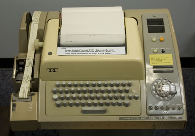
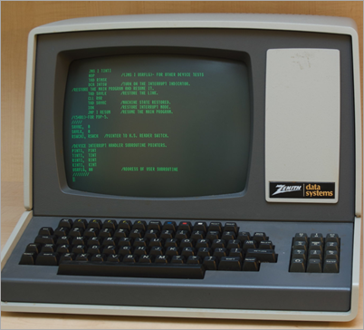
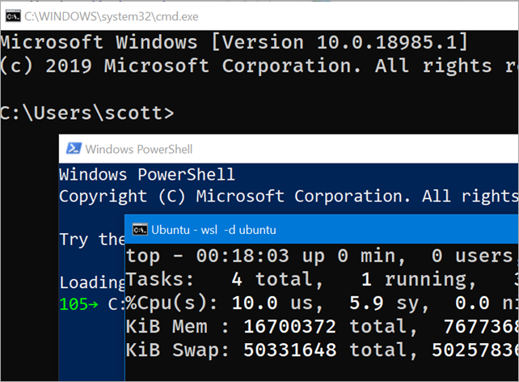
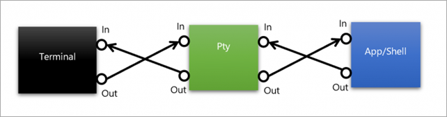
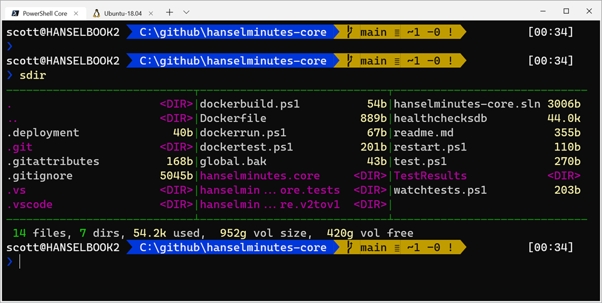

[翻译]控制台、终端和Shell的区别是什么？
控制台、终端和Shell的区别是什么？
原文链接：https://www.hanselman.com/blog/WhatsTheDifferenceBetweenAConsoleATerminalAndAShell.aspx
我见过许多类似的问题，但是这些问题他们本身说明了对一些重要术语的误解。
- 为什么我们要通过 Windows Terminal 使用 PowerShell？
- 我不需要通过 WSL 来使用 bash，我使用 Cygwin
- 我可以将 Conemu 和 PowerShell 一起使用吗或者我需要使用 Windows Terminal吗？
让我们从词汇表开始辨析这些词语。
终端(Terminal)
终端(Terminal)来自终止(Terminate)一词，这表示它是终止的一端或通讯过程的“终止端”。我们经常听到“哑终端”(dumb terminal)这个词，它指的是一个基于文本的环境，你身边的电脑只是接收文本输入和显示文本，而真正在执行工作的是另一端的大型机。
电传打字机(TTY, teletypewriter)是第一种终端。在你面前的是一种文字打字机而不是屏幕。当你在打字机上打字，你会在一张纸上看到你所打出的文本，并且文本会输入到计算机中。当计算机做出回应，你会看到打字机自动在同一张纸上打字。

当我们从软件意义上提及终端，我们指的是终端或电传打字机的文字软件版本。Windows Terminal就是这种。它非常擅长显示文字输出。它可以接收输入并传递它。但是终端并不聪明。它实际上不处理你的输入，它不会查看你的文件或进行思考。
控制台(Console)
在 20 世纪中期人们会有一种叫做控制台或者控制台机柜的家具放在客厅。在计算机中，控制台是一种集成了屏幕和键盘的控制台或机柜。但它实际上是一个终端。技术上说，控制台是设备而终端现在是控制台中的软件程序。

在软件世界里，终端和控制台在所有方面都是同义词。
SHELL
终端会将用户的输入发送给 Shell 程序。Shell 程序生成输出并传递回终端让其显示。下面是一些 Shell 程序：
bash, fish, zsh, ksh, sh, tsch
PowerShell, pwsh
cmd, yori, 4dos, command.com
现在，你有了这些终端，是一个更有意义的要点。你对 Shell 的选择不应该也不能决定你对终端软件的选择。
题外话：WSL 和 WSL2 (适用于 Linux 的 windows 子系统,the Windows Subsystem for Linux) 是运行于 Windows 10 的完整的本地 Linux(或许多 Linux)。它们是完整而且真实的。WSL2 附带了一个真实的 Linux 内核并且运行在 Windows 10 上。Cygwin 不是一个 Linux。Cygwin 是 Windows 上一个包含了 GNU 和 开源工具的大集合，它们提供的功能类似于 Linux。但 Cygwin 不是 Linux，它是一个模拟器。是针对 Win32 编译的 GNU 实用程序。它非常好，但对你来说知道它们之间的区别也很重要。Cygwin 可以让你运行你的 bash shell 脚本，但是它不能运行 Apache、Docker 或其它真正的 ELF 二进制文件和 Linux 应用程序。
你选择的 Windows 控制台吗？
Windows 附带了许多 Shell。这是我正在运行的一些。(图)注意到“chrome”或它们周围的边框和标题了吗？这些 shell 都由一个你从未听过的传统 windows 控制台托管，它叫做 conhost.exe。你可以转到命令提示符，键入 powershell，cmd 或 ubuntu，任意数量的 shell 都能运行。Conhost 完成输入和输出的工作。
现在，请忘记 conhost 的存在，因为它很烂，它已经过时了。

伪控制台、伪终端、PTY、伪TTY(CconPTY)
（不是很懂这一段）
Pseudo Terminals are terminal emulators or software interfaces that emulate terminals. They pretend to be terminals like the ones above. *Nix systems have long had a pseudo-terminal (PTY) infrastructure and now Windows as a pseudoconsole (ConPTY) as well.
Window’s new ConPTY interface is the future of consoles and terminals on Windows. If you choose a 3rd party (non-built-in) console applications for Windows, make sure it supports ConPTY and it’ll be a better experience than some of the older consoles that use screen scraping or other hacks.

回到你对 Windows 控制台的选择
记住在 Windows 上你可以使用很多 shell。如果你不喜欢 conhost.exe （你不应该这样），有大量你可以使用的第三方控制台。
- Hyper
- ConEmu
- cmder
- Console2
- ConsoleZ
- Terminus
- FluentTerminal
- ZOC
- MobaXterm
- Babun (dead)
- 4NT/jpSoftware (not free)
- Putty
- MinTTY
- Windows Terminal (free in Microsoft Store)
- XTermjs - a Typescript component that lets you integrate terminals into your apps
- VSCode includes a Terminal
- Visual Studio 2019 Preview includes a Terminal
所有这些终端都支持上面提到的所有 shell。因为一个 shell 不是一个终端。选择让你开心的一个。我在 Windows Terminal 使用 PowerShell Core 和 WSL2。

希望这篇文章有助于你弄清楚这些事情。
[翻译]控制台、终端和Shell的区别是什么？